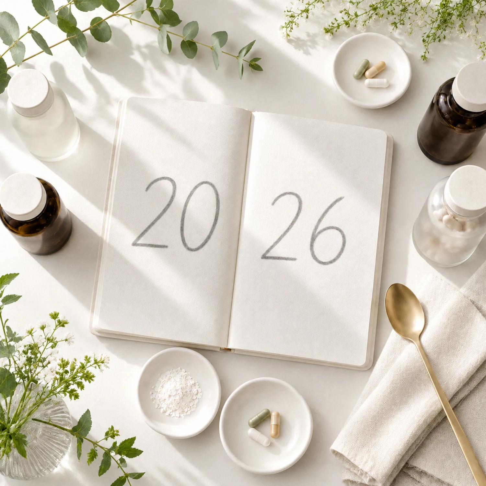
The immunity rush that defined health supplement trends around 2022 has settled into something steadier and far more interesting. Shoppers no longer buy a vitamin C tablet and call it wellness. They want supplements tailored to a goal, a life stage, or a lab result, and they expect the label to tell them the truth about what is inside. That shift, more than any single hero ingredient, is what makes the 2026 picture worth reading closely.
This guide walks through the supplement trends 2026 has put on the table: where the money is moving, which categories are pulling ahead, and what the data actually says once you strip out the hype. Wherever possible the numbers come from Grand View Research and other published market reports, because a trend without a figure behind it is just a guess in a nicer outfit.
Not medical advice. This article reviews dietary supplement trends for 2026 for educational and informational purposes only. It does not describe how to use any supplement, and it is not medical, clinical, or regulatory advice. Talk to a qualified healthcare professional before using any supplement, and consult the applicable regulations in your market before manufacturing or selling one.
The 2026 supplement market in numbers
Start with scale. Grand View Research now puts the global dietary supplements market size on track to reach USD 431.7 billion by 2033, growing at a 9.5% CAGR from 2026 to 2033. Europe moves at a similar pace: the regional market sat near USD 49.4 billion in 2025 and is forecast to almost double to USD 97.8 billion by 2033, a 9.0% CAGR. Germany remains one of Europe’s major supplement markets, expanding at about 9.2% a year. These dietary supplements market trends point to industry growth that no longer runs on broad health awareness alone, but on a deeper bench of supplement users chasing specific, measurable goals.
Two numbers deserve a second look. First, Europe accounted for close to 23% of the global market in 2024, which means a European manufacturer is not operating at the edge of this industry but near its center of gravity. Second, the dietary supplements contract manufacturing market is on track to hit USD 121.2 billion by 2030 at a 12.6% CAGR, outpacing the broader market. Brands are launching faster than they can build their own factories, and they are renting capacity to do it.
The demand base is wide rather than niche. Recent European consumer data suggests supplements are already a mainstream habit: more than half of surveyed consumers (55%) purchase food supplements, and among users, 62% take them daily. That kind of daily supplementation, rooted in preventive health rather than illness, folds nutritional supplements into the same daily routine as morning coffee and lets the market compound year after year instead of spiking and fading with each headline ingredient.
Source: Grand View Research market sizing and segment forecasts.
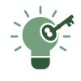
Key point: Growth in 2026 is broad, not concentrated. No single category carries the dietary supplements market. It rides on millions of consumers buying more specific products more often, which rewards brands that can launch precise formulas quickly.
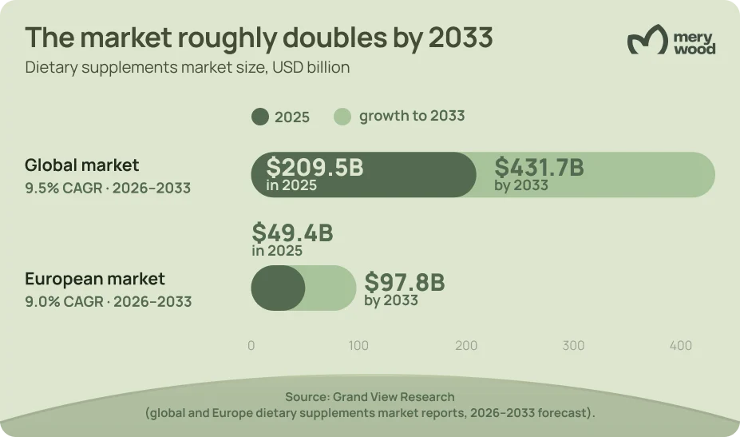
Gut health takes the lead
Ask which idea moved from fringe to mainstream fastest, and gut health wins. European market reports now name gut and digestive health the fastest-growing function segment in the region, and the global probiotic supplement category is forecast to reach USD 14.7 billion by 2030. The reasoning consumers give has widened well beyond digestion. They connect the microbiome to immunity, energy, skin, mood, and even sleep, which turns a single probiotic capsule into a gateway product for half a dozen other goals.
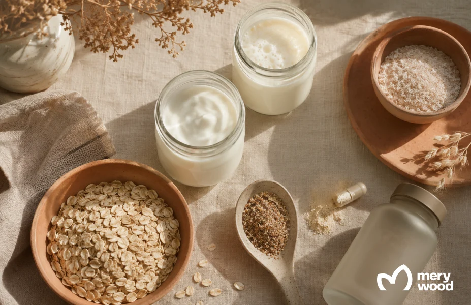
That logic feeds straight into functional foods, where probiotics, prebiotics, and fermentation-derived ingredients are being built into everyday products rather than sold as standalone pills. The functional foods market reached about USD 330 billion in 2023 and is projected near USD 586 billion by 2030. For a supplement brand, the lesson is that gut health is no longer a category to enter. It is a layer to add across a range, from a probiotics line to fiber blends and synbiotic gummies.
- Strains with evidence. Buyers increasingly read strain names, not just “probiotic,” and reward brands that publish what they use.
- Prebiotic pairing. Fiber and prebiotic combinations sell satiety and gut comfort in one step.
- Cross-benefit framing. Gut-skin and gut-immune positioning expands the addressable shopper without new ingredients.
- Built for the shelf. Live cultures force real production discipline: strain stability, guaranteed CFU counts through the expiry date, and moisture-proof packaging.
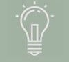
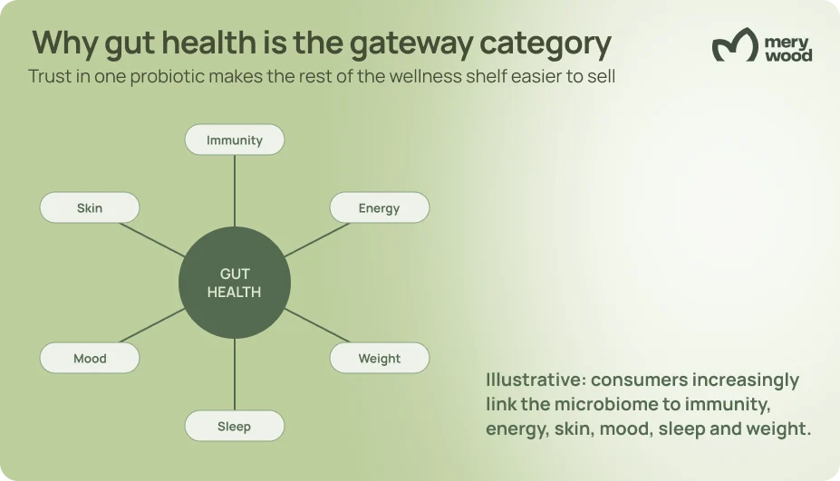
The GLP-1 effect rewrites weight management
No development has bent the weight management conversation like GLP-1 medications. As use climbs, a clear nutritional problem has surfaced: these drugs cut calorie intake by roughly a fifth, and some analyses report that lean mass can account for a meaningful share of the weight lost, with ranges reaching 40% to 60% depending on the drug, study design, and patient profile. Since lean mass includes muscle, that finding has spawned an entire companion category almost overnight, built around protein, amino acids, and the micronutrients that smaller portions tend to miss. Resistance training stays the foundation for holding on to that muscle; supplements support the effort rather than replace it.
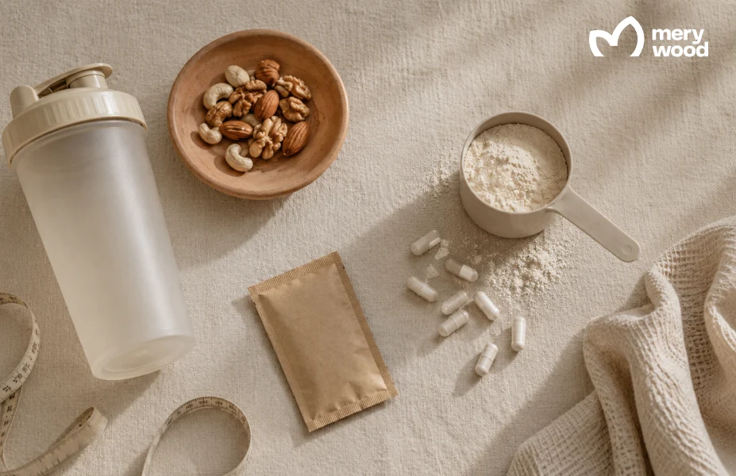
The numbers behind the category are concrete. Clinical nutrition guidance often points GLP-1 users toward 1.2 to 2 grams of protein per kilogram of body weight daily, which is hard to hit on a suppressed appetite. So the formulations follow the science: high-quality protein and amino acid supplements to defend muscle, fiber and probiotics to ease the nausea and constipation users report, and targeted vitamins to close deficiency gaps. At Vitafoods Europe 2026 in Barcelona, ingredient suppliers showcased dedicated GLP-1 companion launches built around bioavailable B12 and muscle-supporting actives, and large retailers expanded shelf space for high-protein lines aimed squarely at this shopper. On the production side it is as much a formulation puzzle as a marketing one: protein has to be masked for taste, dosed into single-serve sachets that suit a smaller appetite, and balanced so that portion control does not turn into a nutrient gap.
For brands, the appeal is that GLP-1 companions sit at the crossroads of weight management, metabolic health, and gut health, three of the strongest demand signals in one product. A sports nutrition protein blend, an electrolyte sachet, and a fiber-plus-probiotic stick can be repositioned for this audience with formulation tweaks rather than a clean-sheet launch, and they slot naturally beside an existing weight loss range.
Companion formulas support a GLP-1 plan. Adequate protein and resistance training remain the core of preserving lean mass.
Personalized nutrition gets practical
Personalized nutrition spent years as a pitch deck promise. In 2026 it ships. Direct-to-consumer brands now build formulas from DNA panels, blood markers, and lifestyle questionnaires, then deliver them on a recurring plan. Custom prenatal subscriptions alone have grown around 15% year over year, and the broader functional supplements category names personalized solutions as its single biggest growth driver heading toward 2030.
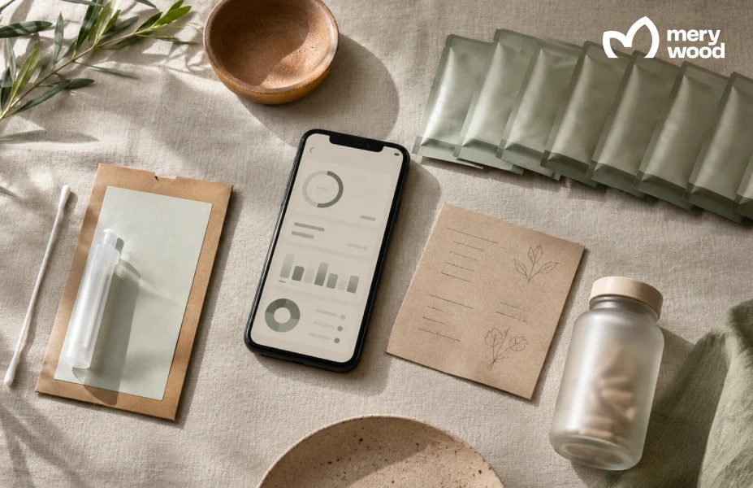
The mechanism that makes personalization profitable is the subscription. Once a shopper commits to a tailored plan, the relationship stops being a one-off purchase and becomes a monthly habit, which is why subscription models and e-commerce now anchor so many launch strategies. Grand View Research puts global online dietary supplement sales on an 11.4% CAGR from 2026 to 2033, well ahead of the overall market; in Europe the online channel grows at a steadier 8.4%, while offline retail still holds around 69.4% of 2025 sales. Subscriptions and personalization are the engines on either track. The honest caveat: real personalization needs real data and tight quality control, and shoppers punish brands that dress up a generic multivitamin as something custom.
Key point: Personalization is a business model as much as a product. The margin often lives in the subscription and the repeat order, not the genetic test. Brands that can produce many small, varied batches have a structural advantage here.
Women's health and prenatal nutrition
Women’s health has moved from a single “women’s multivitamin” SKU to a life-stage map: preconception, prenatal, postnatal, cycle support, and menopause each get their own formula. The prenatal segment shows the pattern in miniature. The global prenatal vitamin market sits near USD 0.65 billion in 2026 and is forecast past USD 1.2 billion by the mid-2030s, and roughly 78% of pregnant women in developed economies already take a dietary supplement. With about 130 million births worldwide each year, demand renews itself constantly.
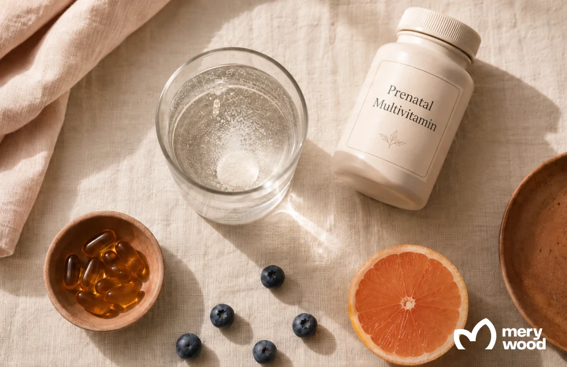
What is changing is the specificity. Brands now formulate for pregnant women by trimester, fold in choline and bioavailable folate that many diets miss, choose iron in a form the stomach tolerates, and add omega-3 and probiotics for gut and fetal support. Preconception and postnatal blends extend the relationship for a year or more around a single pregnancy, covering fertility, lactation, energy, and hair and skin recovery. Hormonal balance, sleep, and mood support round out the rest of the women’s health calendar.
European demand leans hard toward clean, plant-based, and sustainably sourced prenatal options, which plays to a manufacturer that can guarantee EU-compliant sourcing. The same precision shows up in formats: effervescent powders and easy-dose forms win because nausea makes large tablets a tough sell for pregnant women. A brand entering here can lean on staples like a omega-3 softgel and a vitamin D base while differentiating on the trimester-specific blend.
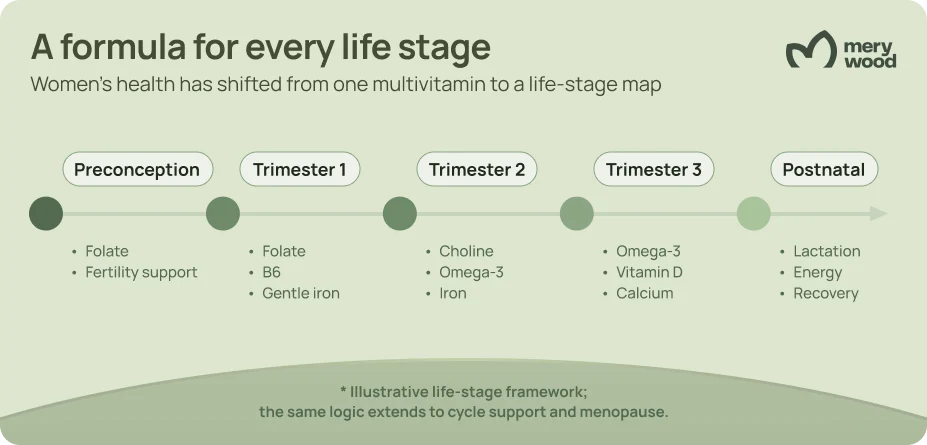
Clean label and the format shift
Clean label has graduated from marketing phrase to baseline expectation. European growth reports tie regional momentum directly to demand for plant-based, organic, non-GMO, and “free-from” formulations, and brands that lead with clean label ingredients are taking share. Shoppers scan for what is missing as much as what is present: no artificial colors, no unnecessary fillers, recognizable natural ingredients. Parents buying for children apply the strictest filter of all.
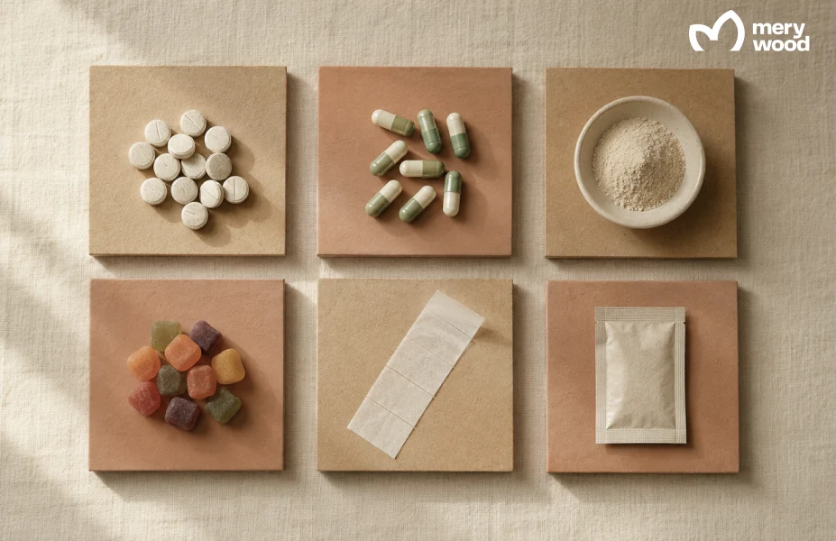
Transparency now drives repeat purchase, not just the first sale. When a label names its strains, doses, and sourcing in plain language, consumers reward it with loyalty, and when it hides behind a proprietary blend, they move on. Consumer preferences have tilted decisively toward fewer, better-explained ingredients, which suits brands willing to publish what they use and where it comes from. On the bench, clean label is a chain of trade-offs: every excipient you strip out is one you have to replace or engineer around, and each swap touches shelf life and allergen documentation.
Format is the other half of the story, and it is where a contract partner earns its keep. The gummy supplements market is climbing from roughly USD 27 billion in 2025 toward USD 42 billion by 2030 because gummies turn a daily chore into something people actually finish. Powders are the fastest-growing format in Europe at about 10.4% a year, carried by protein and greens blends. Tablets and capsules still dominate by volume, and newer formats like dissolvable films and single-dose sachets are pushing into the on-the-go slot. Gummies in particular force trade-offs most brands underestimate: a hard ceiling on actives per piece, a sugar-free base that still has to set and hold shape, and a choice between pectin and gelatin that quietly decides whether the product can call itself vegan.
Manufacturer’s advice: Pick the format before you fall in love with the formula. A clean-label gummy and a high-dose capsule impose very different limits on actives, doses, and shelf life. Deciding format first keeps the project from stalling at the lab stage.
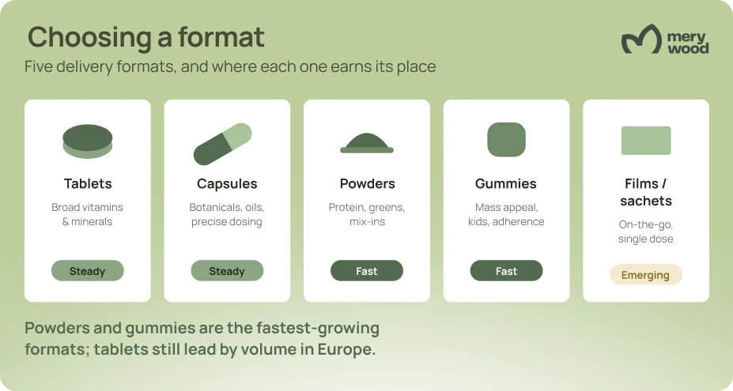
Categories and channels to watch
Beyond the headline trends, several categories are compounding quietly. Brain and cognitive health is the standout, with the brain health supplement market forecast to reach USD 23.5 billion by 2030 at nearly 14% a year, the steepest curve in this group. Sleep support and stress are riding the adaptogen wave, while heart health and bone health stay reliable as aging populations treat them as preventive health insurance. Mental health framing now sits across many of these, from magnesium for stress to omega-3 for mood, all sold as part of one holistic wellness routine rather than as treatments.
Channel matters as much as category. Offline pharmacies and retailers still move most volume in Europe, but online is where growth concentrates, led by subscription and direct-to-consumer models. A modern launch plan treats e-commerce, the right distribution channel mix, and a clean retail story as one decision, not three. The brands winning attention in 2026 sequence their product launches around a content and channel calendar, not around whatever the factory happens to ship.
The same preventive logic is spilling into adjacent ranges: owners increasingly apply their own wellness habits to their animals, which turns pet supplements into a natural extension for human-nutrition brands rather than a separate world.
What 2026 asks of supplement brands
Pull the threads together and a single demand emerges: speed with precision. Consumers want narrow, specific, clean formulas, and they want new ones often. That favors brands built for many small launches over one big bet, which is exactly why contract manufacturing is growing faster than the market it serves. Renting formulation, sourcing, and compliance lets a brand chase a gut-health or GLP-1 companion window while the trend is still open.
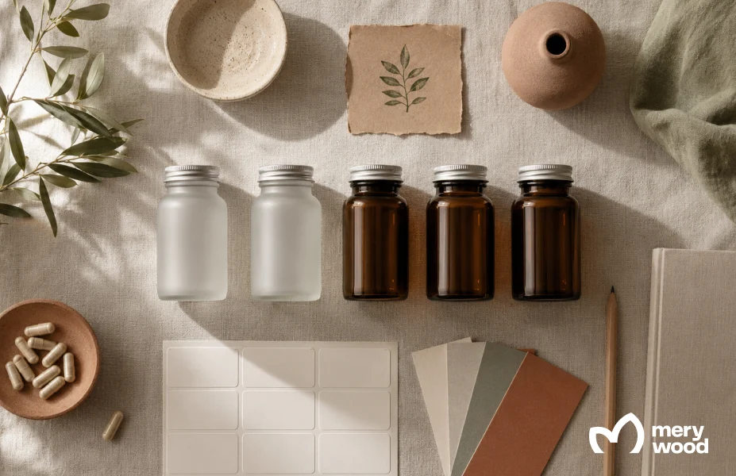
Europe adds a compliance dimension that doubles as a selling point. EU rules on food supplements are strict, and a manufacturer producing under HACCP standards inside the bloc turns that burden into trust on the label. For a brand owner, the practical questions are familiar: how fast can a formula move from idea to shelf, what is the minimum order, and who owns the regulatory paperwork. Those answers decide whether a 2026 trend becomes a 2026 product or a 2027 regret.
Europe adds one more filter that trend-chasers forget: the health-claims test. Under Regulation (EC) No 1924/2006, any nutrition or health claim on a label must be authorised, accurate, and supported by evidence for that ingredient and market. A formula can be inspired by gut, immune, mood, or weight-management demand, but the wording on the pack has to stay inside the permitted claims. Settling that early costs far less than reprinting labels after a market pulls them from sale.
This is where Merywood fits. As an EU-based contract supplement manufacturer, the company develops and produces both white label supplements from a ready catalogue and fully custom private label supplements, across more than 200 formulations and the formats this article covers. Brands that want the full playbook can start with our guide on how to start a supplement company in Europe, then read what affects MOQ in supplement manufacturing before locking a first run.
Manufacturer’s advice: Validate the trend with a small white-label run before committing capital to a custom formula. A 2,500-unit test reads the market honestly, and the data it returns is worth more than any forecast in this article.
Frequently Asked Questions
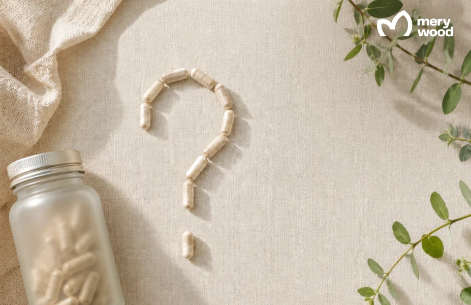
What are the biggest supplement trends in 2026?
The biggest supplement trends in 2026 are gut health, GLP-1 companion nutrition, personalized supplements, women’s health, clean label formulas, gummies, powders, and preventive health products. Each one points the same way: consumers want narrower, better-evidenced products matched to a specific goal, and they increasingly treat daily supplementation as maintenance rather than treatment.
What supplements support people on GLP-1 medications?
Because GLP-1 drugs suppress appetite and can lead to a loss of lean mass, not just fat, the most useful companions are high-quality protein and amino acid supplements, paired with resistance training, plus fiber and probiotics for the digestive side effects many users report. Targeted micronutrients such as vitamin D, magnesium, and B vitamins help close the gaps that come with eating less. Anyone on these medications should confirm a plan with their clinician, since needs vary by dose and goal.
Is personalized nutrition worth it, or just marketing?
It depends on the data behind it. Genuine personalized solutions use DNA panels, blood markers, or detailed intake to adjust a formula, and they pair that with a subscription that tracks results over time. Where it adds value, consumers see better adherence and fewer wasted products. The weak version simply rebrands a standard multivitamin, so the test is whether the recommendation actually changes based on your inputs.
Does Merywood manufacture the trending 2026 categories, like gut health, GLP-1 companions, and women’s health?
Yes. Merywood develops and produces across the categories this article covers, with more than 200 formulations spanning vitamins, minerals, probiotics, omega-3, protein and amino acid blends, and women’s health products. Formulations are available in tablets, capsules, powders, gummies, and other formats, so a brand can match the 2026 trend it is chasing to the delivery form its audience prefers.
What is the minimum order to launch a private or white label supplement with Merywood?
White label orders, where you choose from Merywood’s existing catalogue, start at 2,500 units, which makes them a low-risk way to test a trend. Fully custom private label formulas start at 5,000 units. Within a single run you can use multiple labels or SKUs, so brands can trial several positioning angles without raising the order quantity.
How does Merywood handle EU compliance for new supplement launches?
Every product is manufactured inside the EU under HACCP standards, and Merywood’s regulatory team manages the documentation, ingredient compliance, and the country-specific product notification that EU markets require. Food supplements in the EU are notified to each member state’s competent authority rather than through a single EU-wide registration, so the paperwork shifts by target market. The company supports brands selling across 27 countries, which means that groundwork for selling food supplements into multiple European markets is built into the process rather than left to the brand owner.
Sources
- Grand View Research — Dietary Supplements Market Size & Trends Analysis Report (global, 2026–2033 forecast)
- Grand View Research — Europe Dietary Supplements Market Report (2026–2033 forecast)
- Grand View Research — Dietary Supplements Contract Manufacturing Market Report (2025–2030 forecast)
- Grand View Research — Brain Health Supplements and Probiotic Dietary Supplements Market reports (2025–2030 forecasts)
- MarketsandMarkets — Europe Dietary Supplements Market (gut-health function segment)
- Mordor Intelligence — Gummy Supplements Market (2025–2030 forecast)
- Future Market Insights — Prenatal Vitamin Supplements Market (2026 forecast)
- Vitafoods Europe 2026 trade coverage (GLP-1 companion product launches)
- European Commission — Food Supplements guidance; Regulation (EC) No 1924/2006 on nutrition and health claims